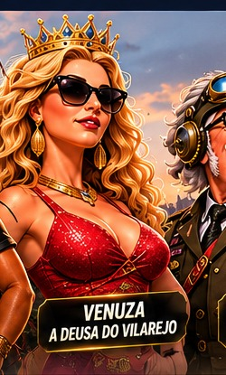
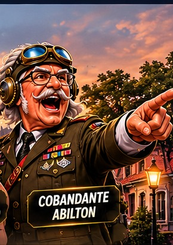

O portal oficial do vilarejoVenâncio
Venâncio
Mil Graus
Humor, informação, comunidade
e solidariedade em um só lugar.
A Barata

VenuzaA Deusa do Vilarejo

CobandanteAbilton
Aqui acontece de tudo.
E se não aconteceu,
o Cobandante ainda vai descobrir!
E se não aconteceu,
o Cobandante ainda vai descobrir!
▤ Últimas notícias
Ver todas →NOTÍCIAS VMG
Venâncio Aires: cidade de gente forte e um povo ainda mais forte!
Histórias, acontecimentos e assuntos que movimentam o nosso vilarejo.
Leia mais →Histórias, humor e tradição: o DNA do nosso vilarejo
Ler matéria →Ideias para um Venâncio ainda melhor
Saiba mais →♟ Nossos personagens
Conheça todos →♡
INSTITUTOMIL GRAUSJuntos por um mundo melhor!
Nossa história
Conheça nossa história →Um vilarejo, muitas histórias.
Conheça a trajetória do Venâncio Mil Graus, a história dos personagens e do criador deste universo de humor, informação e participação comunitária.
Canal direto com o VMG
Viu algo interessante? Conte pra gente.
Envie sua informação, sugestão ou relato. Para vídeos e fotos, o atendimento será direcionado ao WhatsApp.